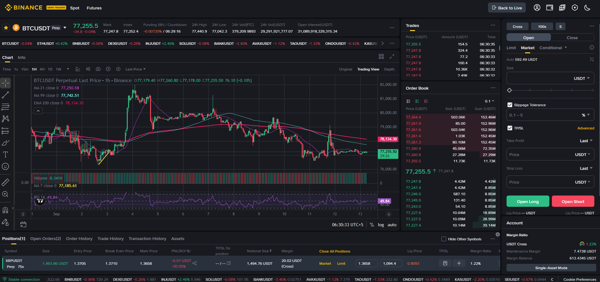

یہ باب باب 16 کا عملی تسلسل ہے: Stop Loss اور Take Profit کو حقیقی حکمتِ عملیوں کے ساتھ جوڑنا، پوزیشن سائزنگ، اور جذباتی ٹریڈنگ سے بچاؤ۔ پڑھنے کے بعد آپ کے پاس ایک قابلِ عمل ٹریڈنگ فریم ورک ہوگا۔

بغیر SL کے ٹریڈ = جوا۔ SL وہ واحد چیز ہے جو آپ کو ایک بڑے نقصان سے بچاتی ہے۔
Entry + SL + TP + Position Size
اگر ان میں سے کوئی ایک غائب ہو → ٹریڈ نہ لگائیں| ٹریڈ | SL کی ضرورت |
|---|---|
| Futures (Long/Short) | ✅ بالکل لازمی (Liquidation کا خطرہ) |
| Margin | ✅ بالکل لازمی |
| Spot (بڑی پوزیشن) | ✅ ضروری |
| Spot (طویل سرمایہ کاری) | اختیاری (حکمتِ عملی پر منحصر) |
| DCA / SIP | عام طور پر نہیں (طویل مدتی) |
| Convert / P2P | فوری لین دین — SL کا تصور نہیں |
⚠️ اہم: DCA اور طویل مدتی سرمایہ کاری میں "SL نہ لگانا" دانشمندی نہیں، بلکہ الگ حکمتِ عملی ہے۔ مگر Futures/Margin میں SL کے بغیر ٹریڈ سراسر خودکشی ہے۔
کامیاب ٹریڈر وہ نہیں جو ہر ٹریڈ جیتتا ہے، بلکہ وہ جو ایک غلط ٹریڈ میں اپنا سرمایہ نہیں کھوتا۔
اکاؤنٹ : 1,000 USDT
فی ٹریڈ رسک : 1% = 10 USDT
اگر SL کا فاصلہ 5% ہے:
پوزیشن سائز = 10 ÷ 0.05 = 200 USDT
نتیجہ: SL لگنے پر صرف 1% نقصان — اکاؤنٹ 99% محفوظ ✅| R:R | جیت کی شرح | نتیجہ (طویل مدت) |
|---|---|---|
| 1:2 | 40% | منافع بخش ✅ |
| 1:2 | 30% | تقریباً برابر |
| 1:3 | 30% | منافع بخش ✅ |
| 1:1 | 40% | نقصان ❌ |
💡 آپ کو ہر بار جیتنے کی ضرورت نہیں — صرف اچھے R:R کے ساتھ اکثریت میں جیتنا کافی ہے۔
ٹائم فریم : 4H / D1
رجحان : HH/HL (Long) یا LL/LH (Short)
Entry : S/R پر Pullback
SL : Swing Low کے نیچے
TP : اگلی S/R
R:R : 1:2+
Duration : دن سے ہفتےٹائم فریم : 1H / 4H
Entry : مزاحمت کا بریک + تصدیقی کینڈل
SL : بریک زون کے اندر
TP : بریک کا فاصلہ (Measured Move)
R:R : 1:2+
Duration : گھنٹے سے دنٹائم فریم : 4H / D1
رجحان : واضح (بڑی تصویر)
Entry : رجحان میں پل بیک + تصدیق
SL : پل بیک کے نیچے (Long)
TP : رجحان کی سمت اگلی S/R
R:R : 1:2+
Duration : دن سے ہفتےٹائم فریم : 1m / 5m
Entry : Pin Bar / Engulfing
SL : 5–10 pips
TP : 10–20 pips
R:R : 1:1.5 سے 1:2
Duration : منٹ
شرط : بڑا حجم + کم Spreadٹائم فریم : 4H / D1
Entry : رینج کے نیچے Buy، اوپر Sell
SL : رینج کے باہر
TP : رینج کا وسط
R:R : 1:1.5+
Duration : رینج قائم رہنے تکتصور : مقررہ وقفے پر مقررہ رقم لگائیں
Entry: قیمت گرے → خریداری جاری
SL : باقاعدہ ٹریڈنگ میں SL (طویل سرمایہ کاری میں اختیاری)
TP : طویل مدتی ہدف
Duration: ماہ سے سال💡 آسان آغاز: نئے صارف کے لیے DCA اور Swing Trading سب سے موزوں ہیں۔ Scalping صرف تجربہ کاروں کے لیے۔
SL ٹریڈنگ ٹول ہے، ہر لین دین میں لازمی نہیں۔
| صورتحال | SL؟ |
|---|---|
| Futures / Margin | ✅ لازمی |
| Spot (بڑی قلیل مدتی پوزیشن) | ✅ ضروری |
| Convert (فوری تبدیلی) | ❌ تصور نہیں |
| P2P (فوری بیدل) | ❌ تصور نہیں |
| Earn / Staking (قید مدت) | ❌ تصور نہیں |
| DCA (طویل سرمایہ کاری) | اختیاری |
⚠️ جہاں SL ممکن نہیں، وہاں پوزیشن سائز ہی حفاظت ہے — صرف اتنا لگائیں جتنا کھونے کی برداشت ہو۔
| جذبہ | نشانی | حل |
|---|---|---|
| لالچ | TP پر بھی نہ بند کرنا | TP پہلے سے طے، مرحلہ وار نکاسی |
| خوف | SL ہٹا دینا | SL کو مقدس سمجھیں |
| بے تابی | بغیر تجزیہ اندھا ٹریڈ | تحریری چیک لسٹ |
| انتقام | نقصان کے بعد جھٹکے | وقفہ لیں، دن بند کریں |
| ضد | غلطی نہ ماننا | جرنل میں دیانت داری |
ٹریڈنگ ایک مہارت ہے، جوا نہیں۔ کامیاب ٹریڈر وہ ہے جو منصوبہ بندی، پوزیشن سائزنگ، مستقل مزاجی اور جذباتی قابو رکھتا ہے۔
SL لگاؤ، R:R بہتر رکھو، 1% سے زیادہ رسک نہ کرو، اور ہر ٹریڈ جرنل میں لکھو۔ یہ چار عادتیں وقت کے ساتھ آپ کو ایک منظم ٹریڈر بنا دیں گی۔